Strings, Lists, Arrays, and Dictionaries¶
The most import data structure for scientific computing in Python is the NumPy array. NumPy arrays are used to store lists of numerical data and to represent vectors, matrices, and even tensors. NumPy arrays are designed to handle large data sets efficiently and with a minimum of fuss. The NumPy library has a large set of routines for creating, manipulating, and transforming NumPy arrays. NumPy functions, like sqrt and sin, are designed specifically to work with NumPy arrays. Core Python has an array data structure, but it’s not nearly as versatile, efficient, or useful as the NumPy array. We will not be using Python arrays at all. Therefore, whenever we refer to an “array,” we mean a “NumPy array.”
Lists are another data structure, similar to NumPy arrays, but unlike NumPy arrays, lists are a part of core Python. Lists have a variety of uses. They are useful, for example, in various bookkeeping tasks that arise in computer programming. Like arrays, they are sometimes used to store data. However, lists do not have the specialized properties and tools that make arrays so powerful for scientific computing. So in general, we prefer arrays to lists for working with scientific data. For other tasks, lists work just fine and can even be preferable to arrays.
Strings are lists of keyboard characters as well as other characters not on your keyboard. They are not particularly interesting in scientific computing, but they are nevertheless necessary and useful. Texts on programming with Python typically devote a good deal of time and space to learning about strings and how to manipulate them. Our uses of them are rather modest, however, so we take a minimalist’s approach and only introduce a few of their features.
Dictionaries are like lists, but the elements of dictionaries are accessed in a different way than for lists. The elements of lists and arrays are numbered consecutively, and to access an element of a list or an array, you simply refer to the number corresponding to its position in the sequence. The elements of dictionaries are accessed by “keys”, which can be either strings or (arbitrary) integers (in no particular order). Dictionaries are an important part of core Python. However, we do not make much use of them in this introduction to scientific Python, so our discussion of them is limited.
Strings¶
Strings are lists of characters. Any character that you can type from a computer keyboard, plus a variety of other characters, can be elements in a string. Strings are created by enclosing a sequence of characters within a pair of single or double quotes. Examples of strings include "Marylyn", "omg", "good_bad_#5f>!", "{0:0.8g}", and "We hold these truths ...". Caution: the quotes defining a given string must both be single or both be double quotes.
Strings can be assigned variable names
In [1]: a = "My dog's name is"
In [2]: b = "Bingo"
Strings can be concatenated using the “+” operator:
In [3]: c = a + " " + b
In [4]: c
Out[4]: "My dog's name is Bingo"
In forming the string c, we concatenated three strings, a, b, and a string literal, in this case a space " ", which is needed to provide a space to separate string a from b.
You will use strings for different purposes: labeling data in data files, labeling axes in plots, formatting numerical output, requesting input for your programs, as arguments in functions, etc.
Because numbers—digits—are also alpha numeric characters, strings can be made up of numbers:
In [5]: d = "927"
In [6]: e = 927
The variable d is a string while the variable e is an integer. What do you think happens if you try to add them by writing d+e? Try it out and see if you understand the result.
Lists¶
Python has two data structures, lists and tuples, that consist of a list of one or more elements. The elements of lists or tuples can be numbers or strings, or both. Lists (we will discuss tuples later) are defined by a pair of square brackets on either end with individual elements separated by commas. Here are two examples of lists:
In [1]: a = [0, 1, 1, 2, 3, 5, 8, 13]
In [2]: b = [5., "girl", 2+0j, "horse", 21]
We can access individual elements of a list using the variable name for the list with square brackets:
In [3]: b[0]
Out[3]: 5.0
In [4]: b[1]
Out[4]: 'girl'
In [5]: b[2]
Out[5]: (2+0j)
The first element of b is b[0], the second is b[1], the third is b[2], and so on. Some computer languages index lists starting with 0, like Python and C, while others index lists (or things more-or-less equivalent) starting with 1 (like Fortran and Matlab). It’s important to keep in mind that Python uses the former convention: lists are zero-indexed.
The last element of this array is b[4], because b has 5 elements. The last element can also be accessed as b[-1], no matter how many elements b has, and the next-to-last element of the list is b[-2], etc. Try it out:
In [6]: b[4]
Out[6]: 21
In [7]: b[-1]
Out[7]: 21
In [8]: b[-2]
Out[8]: 'horse'
Individual elements of lists can be changed. For example:
In [9]: b
Out[9]: [5.0, 'girl', (2+0j), 'horse', 21]
In [10]: b[0] = b[0]+2
In [11]: b[3] = 3.14159
In [12]: b
Out[12]: [7.0, 'girl', (2+0j), 3.14159, 21]
Here we see that 2 was added to the previous value of b[0] and the string 'horse' was replaced by the floating point number 3.14159. We can also manipulate individual elements that are strings:
In [13]: b[1] = b[1] + "s & boys"
In [14]: b
Out[14]: [10.0, 'girls & boys', (2+0j), 3.14159, 21]
You can also add lists, but the result might surprise you:
In [15]: a
Out[15]: [0, 1, 1, 2, 3, 5, 8, 13]
In [16]: a+a
Out[16]: [0, 1, 1, 2, 3, 5, 8, 13, 0, 1, 1, 2, 3, 5, 8, 13]
In [17]: a+b
Out[17]: [0, 1, 1, 2, 3, 5, 8, 13, 10.0, 'girls & boys', (2+0j),
3.14159, 21]
Adding lists concatenates them, just as the “+” operator concatenates strings.
Slicing lists¶
You can access pieces of lists using the slicing feature of Python:
In [18]: b
Out[18]: [10.0, 'girls & boys', (2+0j), 3.14159, 21]
In [19]: b[1:4]
Out[19]: ['girls & boys', (2+0j), 3.14159]
In [20]: b[3:5]
Out[20]: [3.14159, 21]
You access a subset of a list by specifying two indices separated by a colon “:”. This is a powerful feature of lists that we will use often. Here are a few other useful slicing shortcuts:
In [21]: b[2:]
Out[21]: [(2+0j), 3.14159, 21]
In [22]: b[:3]
Out[22]: [10.0, 'girls & boys', (2+0j)]
In [23]: b[:]
Out[23]: [10.0, 'girls & boys', (2+0j), 3.14159, 21]
Thus, if the left slice index is 0, you can leave it out; similarly, if the right slice index is the length of the list, you can leave it out also.
What does the following slice of an array give you?
In [24]: b[1:-1]
You can get the length of a list using Python’s len function:
In [25]: len(b)
Out[25]: 5
Creating and modifying lists¶
Python has functions for creating and augmenting lists. The most useful is the range function, which can be used to create a uniformly spaced sequence of integers. The general form of the function is range([start,] stop[, step]), where the arguments are all integers; those in square brackets are optional:
In [26]: range(10) # makes a list of 10 integers from 0 to 9
Out[26]: [0, 1, 2, 3, 4, 5, 6, 7, 8, 9]
In [27]: range(3,10) # makes a list of 10 integers from 3 to 9
Out[27]: [3, 4, 5, 6, 7, 8, 9]
In [28]: range(0,10,2) # makes a list of 10 integers from 0 to 9
# with increment 2
Out[28]: [0, 2, 4, 6, 8]
You can add one or more elements to the beginning or end of a list using the “+” operator:
In [29]: a = range(1,10,3)
In [30]: a
Out[30]: [1, 4, 7]
In [31]: a += [16, 31, 64, 127]
In [32]: a
Out[32]: [1, 4, 7, 16, 31, 64, 127]
In [33]: a = [0, 0] + a
In [34]: a
Out[34]: [0, 0, 1, 4, 7, 16, 31, 64, 127]
You can insert elements into a list using slicing:
In [35]: b = a[:5] + [101, 102] + a[5:]
In [36]: b
Out[36]: [0, 1, 1, 4, 7, 101, 102, 16, 31, 64, 127]
Tuples¶
Finally, a word about tuples: tuples are lists that are immutable. That is, once defined, the individual elements of a tuple cannot be changed. Whereas a list is written as a sequence of numbers enclosed in square brackets, a tuple is written as a sequence of numbers enclosed in round parentheses. Individual elements of a tuple are addressed in the same way as individual elements of lists are addressed, but those individual elements cannot be changed. All of this illustrated by this simple example:
In [37]: c = (1, 1, 2, 3, 5, 8, 13)
In [37]: c[4]
Out[38]: 5
In [39]: c[4] = 7
---------------------------------------------------------------------------
TypeError: 'tuple' object does not support item assignment
When we tried to change c[4], the system returned an error because we are prohibited from changing an element of a tuple. Tuples offer some degree of safety when we want to define lists of immutable constants.
Multidimensional lists and tuples¶
We can also make multidimensional lists, or lists of lists. Consider, for example, a list of three elements, where each element in the list is itself a list:
In [40]: a = [[3, 9], [8, 5], [11, 1]]
Here we have a three-element list where each element consists of a two-element list. Such constructs can be useful in making tables and other structures. They also become relevant later on in our discussion of NumPy arrays and matrices, which we introduce below.
We can access the various elements of a list with a straightforward extension of the indexing scheme we have been using. The first element of the list a above is a[0], which is [3, 9]; the second is a[1], which is [8, 5]. The first element of a[1] is accessed as a[1][0], which is 8, as illustrated below:
In [41]: a[0]
Out[41]: [3, 9]
In [42]: a[1]
Out[42]: [8, 5]
In [43]: a[1][0]
Out[43]: 8
In [44]: a[2][1]
Out[44]: 1
Multidimensional tuples work exactly like multidimensional lists, except they are immutable.
NumPy arrays¶
The NumPy array is the real workhorse of data structures for scientific and engineering applications. The NumPy array, formally called ndarray in NumPy documentation, is similar to a list but where all the elements of the list are of the same type. The elements of a NumPy array, or simply an array, are usually numbers, but can also be boolians, strings, or other objects. When the elements are numbers, they must all be of the same type. For example, they might be all integers or all floating point numbers.
Creating arrays (1-d)¶
NumPy has a number of functions for creating arrays. We focus on four (or five or six, depending on how you count!). The first of these, the array function, converts a list to an array:
In [1]: a = [0, 0, 1, 4, 7, 16, 31, 64, 127]
In [2]: b = array(a)
In [3]: b
Out[3]: array([ 0, 0, 1, 4, 7, 16, 31, 64, 127])
In [4]: c = array([1, 4., -2, 7])
In [5]: c
Out[5]: array([ 1., 4., -2., 7.])
Notice that b is an integer array, as it was created from a list of integers. On the other hand, c is a floating point array even though only one of the elements of the list from which it was made was a floating point number. The array function automatically promotes all of the numbers to the type of the most general entry in the list, which in this case is a floating point number. In the case that elements of the list is made up of numbers and strings, all the elements become strings when an array is formed from a list.
The second way arrays can be created is using the NumPy linspace or logspace functions. The linspace function creates an array of  evenly spaced points between a starting point and an ending point. The form of the function is linspace(start, stop, N). If the third argument N is omitted, then N=50.
evenly spaced points between a starting point and an ending point. The form of the function is linspace(start, stop, N). If the third argument N is omitted, then N=50.
In [6]: linspace(0, 10, 5)
Out[6]: array([ 0. , 2.5, 5. , 7.5, 10. ])
The linspace function produced 5 evenly spaced points between 0 and 10 inclusive. NumPy also has a closely related function logspace that produces evenly spaced points on a logarithmically spaced scale. The arguments are the same as those for linspace except that start and stop refer to a power of 10. That is, the array starts at  and ends at 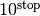.
and ends at 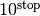.
In [7]: %precision 1 # display only 1 digit after decimal
Out[7]: u'%.1f'
In [8]: logspace(1, 3, 5)
Out[8]: array([ 10. , 31.6, 100. , 316.2, 1000. ])
The logspace function created an array with 5 points evenly spaced on a logarithmic axis starting at 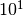 and ending at  . The logspace function is particularly useful when you want to create a log-log plot.
. The logspace function is particularly useful when you want to create a log-log plot.
The third way arrays can be created is using the NumPy arange function, which is similar to the Python range function for creating lists. The form of the function is arange(start, stop, step). If the third argument is omitted step=1. If the first and third arguments are omitted, then start=0 and step=1.
In [9]: arange(0, 10, 2)
Out[9]: array([0, 2, 4, 6, 8])
In [10]: arange(0., 10, 2)
Out[10]: array([ 0., 2., 4., 6., 8.])
In [11]: arange(0, 10, 1.5)
Out[11]: array([ 0. , 1.5, 3. , 4.5, 6. , 7.5, 9. ])
The arange function produces points evenly spaced between 0 and 10 exclusive of the final point. Notice that arange produces an integer array in the first case but a floating point array in the other two cases. In general arange produces an integer array if the arguments are all integers; making any one of the arguments a float causes the array that is created to be a float.
A fourth way to create an array is with the zeros and ones functions. As their names imply, they create arrays where all the elements are either zeros or ones. They each take on mandatory argument, the number of elements in the array, and one optional argument that specifies the data type of the array. Left unspecified, the data type is a float. Here are three examples
In [12]: zeros(6)
Out[12]: array([ 0., 0., 0., 0., 0., 0.])
In [13]ones(8)
Out[13]: array([ 1., 1., 1., 1., 1., 1., 1., 1.])
In [14]ones(8, dtype=int)
Out[14]: array([1, 1, 1, 1, 1, 1, 1, 1])
| Recap of ways to create a 1-d array |
- array(a):
- Creates an array from the list a.
- linspace(start, stop, num):
- Returns num evenly spaced numbers over an interval from start to stop inclusive. [num=50 if omitted.]
- logspace(start, stop, num):
- Returns num logarithmically spaced numbers over an interval from
- arange([start,] stop[, step,], dtype=None):
- Returns data points from start to end, exclusive, evenly spaced by step. [step=1 if omitted. start=0 and step=1 if both are omitted.]
- zeros(num, dtype=float):
- Returns an an array of 0s with num elements. Optional dtype argument can be used to set data type; left unspecified, a float array is made.
- ones(num, dtype=float):
- Returns an an array of 1s with num elements. Optional dtype argument can be used to set data type; left unspecified, a float array is made.
Mathematical operations with arrays¶
The utility and power of arrays in Python comes from the fact that you can process and transform all the elements of an array in one fell swoop. The best way to see how this works is look at an example.
In [15]: a = linspace(-1., 5, 7)
In [16]: a
Out[16]: array([-1., 0., 1., 2., 3., 4., 5.])
In [17]: a*6
Out[17]: array([ -6., 0., 6., 12., 18., 24., 30.])
Here we can see that each element of the array has been multiplied by 6. This works not only for multiplication, but for any other mathematical operation you can imagine: division, exponentiation, etc.
In [18]: a/5
Out[18]: array([-0.2, 0. , 0.2, 0.4, 0.6, 0.8, 1. ])
In [19]: a**3
Out[19]: array([ -1., 0., 1., 8., 27., 64., 125.])
In [20]: a+4
Out[20]: array([ 3., 4., 5., 6., 7., 8., 9.])
In [21]: a-10
Out[21]: array([-11., -10., -9., -8., -7., -6., -5.])
In [22]: (a+3)*2
Out[22]: array([ 4., 6., 8., 10., 12., 14., 16.])
In [23]: sin(a)
Out[23]: array([-0.84147098, 0. , 0.84147098, 0.90929743,
0.14112001, -0.7568025 , -0.95892427])
In [24]: exp(-a)
Out[24]: array([ 2.71828183, 1. , 0.36787944, 0.13533528,
0.04978707, 0.01831564, 0.00673795])
In [25]: 1. + exp(-a)
Out[25]: array([ 3.71828183, 2. , 1.36787944, 1.13533528,
1.04978707, 1.01831564, 1.00673795])
In [26]: b = 5*ones(8)
In [27]: b
Out[27]: array([ 5., 5., 5., 5., 5., 5., 5., 5.])
In [28] b += 4
In [29] b
Out[29]: array([ 9., 9., 9., 9., 9., 9., 9., 9.])
In each case, you can see that the same mathematical operations are performed individually on each element of each array. Even fairly complex algebraic computations can be carried out this way.
Let’s say you want to create an  -
- data set of 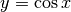 vs. over the interval from -3.14 to 3.14. Here is how you might do it.
data set of 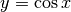 vs. over the interval from -3.14 to 3.14. Here is how you might do it.
In [30]: x = linspace(-3.14, 3.14, 21)
In [31]: y = cos(x)
In [32]: x
Out[32]: array([-3.14 , -2.826, -2.512, -2.198, -1.884, -1.57 ,
-1.256, -0.942, -0.628, -0.314, 0. , 0.314,
0.628, 0.942, 1.256, 1.57 , 1.884, 2.198,
2.512, 2.826, 3.14 ])
In [33]: y
Out[33]: array([ -1.000e+00, -9.506e-01, -8.083e-01,
-5.869e-01, -3.081e-01, 7.963e-04,
3.096e-01, 5.882e-01, 8.092e-01,
9.511e-01, 1.000e+00, 9.511e-01,
8.092e-01, 5.882e-01, 3.096e-01,
7.963e-04, -3.081e-01, -5.869e-01,
-8.083e-01, -9.506e-01, -1.000e+00])
You can use arrays as inputs for any of the functions introduced in the section on Python functions: a first look. You might well wonder what happens if Python encounters an illegal operation. Here is one example.
In [34]: a
Out[34]: array([-1., 0., 1., 2., 3., 4., 5.])
In [35]: log(a)
-c:1: RuntimeWarning: divide by zero encountered in log
-c:1: RuntimeWarning: invalid value encountered in log
Out[35]: array([ nan, -inf, 0. , 0.693, 1.099, 1.386,
1.609])
We see that NumPy calculates the logarithm where it can, and returns nan (not a number) for an illegal operation, taking the logarithm of a negative number, and -inf, or  for the logarithm of zero. The other values in the array are correctly reported. NumPy also prints out a warning message to let you know that something untoward has occurred.
for the logarithm of zero. The other values in the array are correctly reported. NumPy also prints out a warning message to let you know that something untoward has occurred.
Arrays can also be added, subtracted, multiplied, and divided by each other on an element-by-element basis, provided the two arrays have the same size. Consider adding the two arrays a and b defined below:
In [36]: a = array([34., -12, 5.])
In [37]: b = array([68., 5.0, 20.])
In [38]: a+b
Out[38]: array([ 102., -7., 25.])
The result is that each element of the two arrays are added. Similar results are obtained for subtraction, multiplication, and division:
In [39]: a-b
Out[39]: array([-34., -17., -15.])
In [40]: a*b
Out[40]: array([ 2312., -60., 100.])
In [41]: a/b
Out[41]: array([ 0.5 , -2.4 , 0.25])
These kinds of operations with arrays are called vectorized operations because the entire array, or “vector”, is processed as a unit. Vectorized operations are much faster than processing each element of arrays one by one. Writing code that takes advantage of these kinds of vectorized operations is almost always to be preferred to other means of accomplishing the same task, both because it is faster and because it is usually syntactically simpler. You will see examples of this later on when we discuss loops in Chapter 6.
Slicing and addressing arrays¶
Arrays can be sliced in the same ways that strings and lists can be sliced—any way you slice it! Ditto for accessing individual array elements: 1-d arrays are addressed the same way as strings and lists. Slicing, combined with the vectorized operations can lead to some pretty compact and powerful code.
Suppose, for example, that we have two arrays y, and t for position vs time of a falling object, say a ball, and we want to use these data to calculate the velocity as a function of time:
In [42]: y = array([ 0. , 1.3, 5. , 10.9, 18.9, 28.7, 40. ])
In [43]: t = array([ 0. , 0.49, 1. , 1.5 , 2.08, 2.55, 3.2 ])
We can get find the average velocity for time interval  by the formula
by the formula

We can easily calculate the entire array of of velocities using the slicing and vectorized subtraction properties of NumPy arrays by noting that we can create two y arrays displaced by one index
In [44]: y[:-1]
Out[44]: array([ 0. , 1.3, 5. , 10.9, 18.9, 28.7])
In [45]: y[1:]
Out[45]: array([ 1.3, 5. , 10.9, 18.9, 28.7, 40. ])
The element-by-element difference of these two arrays is
In [46]: y[1:]-y[:-1]
Out[46]: array([ 1.3, 3.7, 5.9, 8. , 9.8, 11.3])
The element-by-element difference of the two arrays y[1:]-y[:-1] divided by t[1:]-t[:-1] gives the entire array of velocities
In [47]: v = (y[1:]-y[:-1])/(t[1:]-t[:-1])
In [48]: v
Out[48]: array([ 2.65306122, 7.25490196, 11.8 ,
13.79310345, 20.85106383, 17.38461538])
Of course, these are the average velocities over each interval so the times best associated with each interval are the times halfway in between the original time array, which we can calculate using a similar trick of slicing:
In [49]: tv = (t[1:]+t[:-1])/2.
In [50]: tv
Out[50]: array([ 0.245, 0.745, 1.25 , 1.79 , 2.315, 2.875])
Multi-dimensional arrays and matrices¶
So far we have examined only one-dimensional NumPy arrays, that is, arrays that consist of a simple sequence of numbers. However, NumPy arrays can be used to represent multidimensional arrays. For example, you may be familiar with the concept of a matrix, which consists of a series of rows and columns of numbers. Matrices can be represented using two-dimensional NumPy arrays. Higher dimension arrays can also be created as the application demands.
Creating NumPy arrays¶
There are a number of ways of creating multidimensional NumPy arrays. The most straightforward way is to convert a list to an array using NumPy’s array function, which we demonstrate here:
In [51]: b = array([[1., 4, 5], [9, 7, 4]])
In [52]: b
Out[52]: array([[1., 4., 5.],
[9., 7., 4.]])
Notice the syntax used above in which two one-dimensional lists [1., 4, 5] and [9, 7, 4] are enclosed in square brackets to make a two-dimensional list. The array function converts the two-dimensional list, a structure we introduced earlier, to a two-dimensional array. When it makes the conversion from a list to an array, the array function makes all the elements have the same data type as the most complex entry, in this case a float. This points out an important difference between NumPy arrays and lists: all elements of a NumPy array must be of the same data type: floats, or integers, or complex numbers, etc.
There are a number of other functions for creating arrays. For example, a 3 row by 4 column array or  array with all the elements filled with 1 can be created using the ones function introduced earlier.
array with all the elements filled with 1 can be created using the ones function introduced earlier.
In [53]: a = ones((3,4), dtype=float)
In [54]: a
Out[54]: array([[ 1., 1., 1., 1.],
[ 1., 1., 1., 1.],
[ 1., 1., 1., 1.]])
Using a tuple to specify the size of the array in the first argument of the ones function creates a multidimensional array, in this case a two-dimensional array with the two elements of the tuple specifying the number of rows and columns, respectively. The zeros function can be used in the same way to create a matrix or other multidimensional array of zeros.
The eye(N) function creates an  two-dimensional identity matrix with ones along the diagonal:
two-dimensional identity matrix with ones along the diagonal:
In [55]: eye(4)
Out[55]: array([[ 1., 0., 0., 0.],
[ 0., 1., 0., 0.],
[ 0., 0., 1., 0.],
[ 0., 0., 0., 1.]])
Multidimensional arrays can also be created from one-dimensional arrays using the reshape function. For example, a  array can be created as follows:
array can be created as follows:
In [56]: c = arange(6)
In [57]: c
Out[57]: array([0, 1, 2, 3, 4, 5])
In [58]: c = reshape(c, (2,3))
In [59]: c
Out[59]: array([[0, 1, 2],
[3, 4, 5]])
Indexing multidimensional arrays¶
The individual elements of arrays can be accessed in the same way as for lists:
In [60]: b[0][2]
Out[60]: 5.
You can also use the syntax
In [61]: b[0,2]
Out[61]: 5.
which means the same thing. Caution: both the b[0][2] and the b[0,2] syntax work for NumPy arrays and mean exactly the same thing; for lists only the b[0][2] syntax works.
Matrix operations¶
Addition, subtraction, multiplication, division, and exponentiation all work with multidimensional arrays the same way they work with one dimensional arrays, on an element-by-element basis, as illustrated below:
In [62]: b
Out[62]: array([[ 1., 4., 5.],
[ 9., 7., 4.]])
In [63]: 2*b
Out[63]: array([[ 2., 8., 10.],
[ 18., 14., 8.]])
In [64]: b/4.
Out[64]: array([[ 0.25, 1. , 1.25],
[ 2.25, 1.75, 1. ]])
In [65]: b**2
Out[65]: array([[ 1., 16., 25.],
[ 81., 49., 16.]])
In [66]: b-2
Out[66]: array([[-1., 2., 3.],
[ 7., 5., 2.]])
Functions also act on an element-to-element basis
In [67]: sin(b)
Out[67]: array([[ 0.84147098, -0.7568025 , -0.95892427],
[ 0.41211849, 0.6569866 , -0.7568025 ]])
Multiplying two arrays together is done on an element-by-element basis. Using the matrices b and c defined above, multiplying them together gives
In [68]: b
Out[68]: array([[ 1., 4., 5.],
[ 9., 7., 4.]])
In [69]: c
Out[69]: array([[0, 1, 2],
[3, 4, 5]])
In [70]: b*c
Out[70]: array([[ 0., 4., 10.],
[ 27., 28., 20.]])
Of course, this requires that both arrays have the same shape. Beware: array multiplication, done on an element-by-element basis, is not the same as matrix multiplication as defined in linear algebra. Therefore, we distinguish between array multiplication and matrix multiplication in Python.
Normal matrix multiplication is done with NumPy’s dot function. For example, defining d to be the transpose of c using using the array function’s T transpose method creates an array with the correct dimensions that we can use to find the matrix product of b and d:
In [71]: d = c.T
In [72]: d
Out[72]: array([[0, 3],
[1, 4],
[2, 5]])
In [73]: dot(b,d)
Out[73]: array([[ 14., 44.],
[ 15., 75.]])
Differences between lists and arrays¶
While lists and arrays are superficially similar—they are both multi-element data structures—they behave quite differently in a number of circumstances. First of all, lists are part of the core Python programming language; arrays are a part of the numerical computing package NumPy. Therefore, you have access to NumPy arrays only if you load the NumPy package using the import command.
Here we list some of the differences between Python lists and NumPy arrays, and why you might prefer to use one or the other depending on the circumstance.
- The elements of a NumPy array must all be of the same type, whereas the elements of a Python list can be of completely different types.
- NumPy arrays support “vectorized” operations like element-by-element addition and multiplication. This is made possible, in part, by the fact that all elements of the array have the same type, which allows array operations like element-by-element addition and multiplication to be carried out by very efficient C loops. Such “vectorized” operations on arrays, which includes operations by NumPy functions such as numpy.sin and numpy.exp, are much faster than operations performed by loops using the core Python math package functions, such as math.sin and math.exp, that act only on individual elements and not on whole lists or arrays.
- Adding one or more additional elements to a NumPy array creates a new array and destroys the old one. Therefore it can be very inefficient to build up large arrays by appending elements one by one, especially if the array is very large, because you repeatedly create and destroy large arrays. By contrast, elements can be added to a list without creating a whole new list. If you need to build an array element by element, it is usually better to build it as a list, and then convert it to an array when the list is complete. At this point, it may be difficult for you to appreciate how and under what circumstances you might want build up an array element by element. Examples are provided later on: for an example see the section on Looping over arrays in user-defined functions.
Dictionaries¶
A Python list is a collection of Python objects indexed by an ordered sequence of integers starting from zero. A dictionary is also collection of Python objects, just like a list, but one that is indexed by strings or numbers (not necessarily integers and not in any particular order) or even tuples! For example, suppose we want to make a dictionary of room numbers indexed by the name of the person who occupies each room. We create our dictionary using curly brackets {...}.
In [1]: room = {"Emma":309, "Jacob":582, "Olivia":764}
The dictionary above has three entries separated by commas, each entry consisting of a key, which in this case is a string, and a value, which in this case is a room number. Each key and its value are separated by a colon. The syntax for accessing the various entries is similar to a that of a list, with the key replacing the index number. For example, to find out the room number of Olivia, we type
In [2]: room["Olivia"]
Out[2]: 764
The key need not be a string; it can be any immutable Python object. So a key can be a string, an integer, or even a tuple, but it can’t be a list. And the elements accessed by their keys need not be a string, but can be almost any legitimate Python object, just as for lists. Here is a weird example
In [3]: weird = {"tank":52, 846:"horse", "bones":[23,
...: "fox", "grass"], "phrase":"I am here"}
In [4]: weird["tank"]
Out[4]: 52
In [5]: weird[846]
Out[5]: 'horse'
In [6]: weird["bones"]
Out[6]: [23, 'fox', 'grass']
In [7]: weird["phrase"]
Out[7]: 'I am here'
Dictionaries can be built up and added to in a straightforward manner
In [8]: d = {}
In [9]: d["last name"] = "Alberts"
In [10]: d["first name"] = "Marie"
In [11]: d["birthday"] = "January 27"
In [12]: d
Out[12]: {'birthday': 'January 27', 'first name': 'Marie',
'last name': 'Alberts'}
You can get a list of all the keys or values of a dictionary by typing the dictionary name followed by .keys() or .values().
In [13]: d.keys()
Out[13]: ['last name', 'first name', 'birthday']
In [14]: d.values()
Out[14]: ['Alberts', 'Marie', 'January 27']
In other languages, data types similar to Python dictionaries may be called “hashmaps” or “associative arrays”, so you may see such term used if you read on the web about dictionaries.
Random numbers¶
Random numbers are widely used in science and engineering computations. They can be used to simulate noisy data, or to model physical phenomena like the distribution of velocities of molecules in a gas, or to act like the roll of dice in a game. There are even methods for numerically evaluating multi-dimensional integrals using random numbers.
The basic idea of a random number generator is that it should be able to produce a sequence of numbers that are distributed according to some predetermined distribution function. NumPy provides a number of such random number generators in its library numpy.random. Here we focus on three: rand, randn, and randint.
Uniformly distributed random numbers¶
The rand(num) function creates and array of num floats uniformly distributed on the interval from 0 to 1.
In [1]: rand()
Out[1]: 0.5885170150833566
In [2]: rand(5)
Out[2]: array([ 0.85586399, 0.21183612, 0.80235691,
0.65943861, 0.25519987])
If rand has no argument, a single random number is generated. Otherwise, the argument specifies the number of size of the array of random numbers that is created.
If you want random numbers uniformly distributed over some other interval, say from  to
to  , then you can do that simply by stretching the interval so that it has a width of 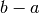 and displacing the lower limit from 0 to . The following statements produce random numbers uniformly distributed from 10 to 20:
, then you can do that simply by stretching the interval so that it has a width of 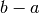 and displacing the lower limit from 0 to . The following statements produce random numbers uniformly distributed from 10 to 20:
In [3]: a, b = 10, 20
In [4]: (b-a)*rand(20) + a
Out[4]: array([ 10.99031149, 18.11685555, 11.48302458,
18.25559651, 17.55568817, 11.86290145,
17.84258224, 12.1309852 , 14.30479884,
12.05787676, 19.63135536, 16.58552886,
19.15872073, 17.59104303, 11.48499468,
10.16094915, 13.95534353, 18.21502143,
19.61360422, 19.21058726])
Normally distributed random numbers¶
The function randn(num) produces a normal or Gaussian distribution of num random numbers with a mean of 0 and a standard deviation of 1. That is, they are distributed according to
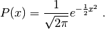
The figure below shows histograms for the distributions of 10,000 random numbers generated by the np.random.rand (blue) and np.random.randn (green) functions. As advertised, the np.random.rand function produces an array of random numbers that is uniformly distributed between the values of 0 and 1, while np.random.randn function produces an array of random numbers that follows a distribution of mean 0 and standard deviation 1.
Histograms of random numbers.
If we want a random numbers with a Gaussian distribution of width  centered about
centered about  , we stretch the interval by a factor of and displace it by . The following code produces 20 random numbers normally distributed around 15 with a width of 10:
, we stretch the interval by a factor of and displace it by . The following code produces 20 random numbers normally distributed around 15 with a width of 10:
In [5]: x0, sigma = 15, 10
In [6]: sigma*randn(20) + x0
Out[6]: array([ 9.36069244, 13.49260733, 6.12550102,
18.50471781, 9.89499319, 14.09576728,
12.45076637, 17.83073628, 2.95085564,
18.2756275 , 14.781659 , 31.80264078,
20.8457924 , 13.87890601, 25.41433678,
15.44237582, 21.2385386 , -3.91668973,
31.19120157, 26.24254326])
Random distribution of integers¶
The function randint(low, high, num) produces a uniform random distribution of num integers between low (inculsive) and high (exclsusive). For example, we can simulate a dozen rolls a single die with the following statement
In [7]: randint(1, 7, 12)
Out[7]: array([6, 2, 1, 5, 4, 6, 3, 6, 5, 4, 6, 2])
Loading random number functions¶
When working within the IPython shell, you can use the random number functions simply by writing rand(10), randn(10), or, randint(10), because the np.random library is loaded when IPython is launched. However, to use these functions in a script or program, you need to load them from the numpy.random library, as discussed in section on Importing Modules, and as illustrated in the above program for making the histogram in the above figure.
| Recap of random number generators |
- Random number generators
- must be imported from the numpy.random library. For more information, see http://docs.scipy.org/doc/numpy/reference/routines.random.html
- rand(num)
- generates an array of num random floats uniformly distributed on the interval from 0 to 1.
- randn(num)
- generates an array of num random floats normally distributed with a width of 1.
- randint(low, high, num)
- generates an array of num random integers between low (inclusive) and high exclusive.
Exercises¶
Create at array of 9 evenly spaced numbers going from 0 to 29 (inclusive) and give it the variable name r. Find the square of each element of the array (as simply as possible). Find twice the value of each element of the array in two different ways: (i) using addition and (ii) using multiplication.
Create the following arrays:
- an array of 100 elements all equal to
 , the base of the natural logarithm;
, the base of the natural logarithm; - an array in 1-degree increments of all the angles in degrees from 0 to 360 degrees;
- an array in 1-degree increments of all the angles in radians from 0 to 360 degrees;
- an array from 12 to 17, not including 17, in 0.2 increments;
- an array from 12 to 17, including 17, in 0.2 increments.
- an array of 100 elements all equal to
The position of a ball at time
 dropped with zero initial velocity from a height
dropped with zero initial velocity from a height  is given by
is given by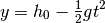
where 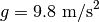. Suppose
 . Find the sequence of times when the ball passes each half meter assuming the ball is dropped at
. Find the sequence of times when the ball passes each half meter assuming the ball is dropped at  . Hint: Create a NumPy array for that goes from 10 to 0 in increments of -0.5 using the arange function. Solving the above equation for , show that
. Hint: Create a NumPy array for that goes from 10 to 0 in increments of -0.5 using the arange function. Solving the above equation for , show that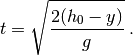
Using this equation and the array you created, find the sequence of times when the ball passes each half meter. Save your code as a Python script. It should yield the following results for the y and t arrays:
In [2]: y Out[2]: array([10. , 9.5, 9. , 8.5, 8. , 7.5, 7. , 6.5, 6. , 5.5, 5. , 4.5, 4. , 3.5, 3. , 2.5, 2. , 1.5, 1. , 0.5]) In [3]: t Out[3]: array([ 0. , 0.31943828, 0.45175395, 0.55328334, 0.63887656, 0.71428571, 0.7824608 , 0.84515425, 0.9035079 , 0.95831485, 1.01015254, 1.05945693, 1.10656667, 1.15175111, 1.19522861, 1.23717915, 1.27775313, 1.31707778, 1.35526185, 1.39239919])
Recalling that the average velocity over an interval
 is defined as 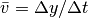, find the average velocity for each time interval in the previous problem using NumPy arrays. Keep in mind that the number of time intervals is one less than the number of times. Hint: What are the arrays y[1:20] and y[0:19]? What does the array y[1:20]-y[0:19] represent? (Try printing out the two arrays from the IPython shell.) Using this last array and a similar one involving time, find the array of average velocities. Bonus: Can you think of a more elegant way of representing y[1:20]-y[0:19] that does not make explicit reference to the number of elements in the y array—one that would work for any length array?
is defined as 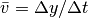, find the average velocity for each time interval in the previous problem using NumPy arrays. Keep in mind that the number of time intervals is one less than the number of times. Hint: What are the arrays y[1:20] and y[0:19]? What does the array y[1:20]-y[0:19] represent? (Try printing out the two arrays from the IPython shell.) Using this last array and a similar one involving time, find the array of average velocities. Bonus: Can you think of a more elegant way of representing y[1:20]-y[0:19] that does not make explicit reference to the number of elements in the y array—one that would work for any length array?
You should get the following answer for the array of velocities:
In [5]: v Out[5]: array([-1.56524758, -3.77884195, -4.9246827 , -5.84158351, -6.63049517, -7.3340579 , -7.97531375, -8.56844457, -9.12293148, -9.64549022, -10.14108641, -10.61351563, -11.06575711, -11.50020061, -11.91879801, -12.32316816, -12.71467146, -13.09446421, -13.46353913])